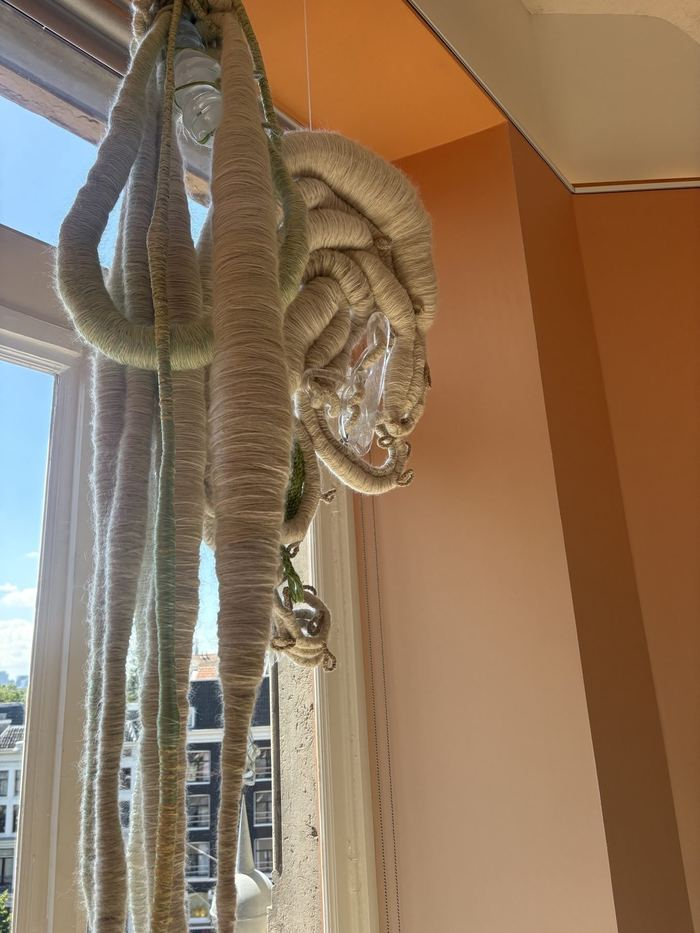
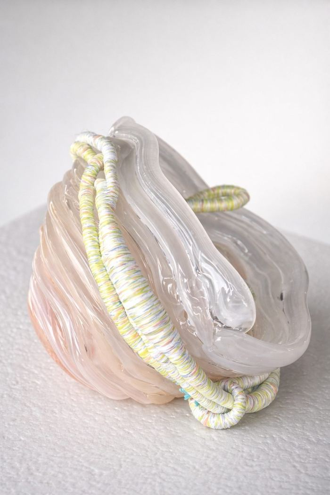
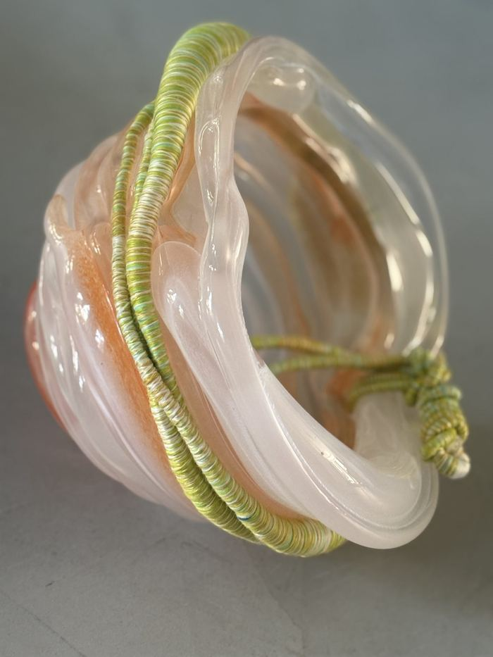
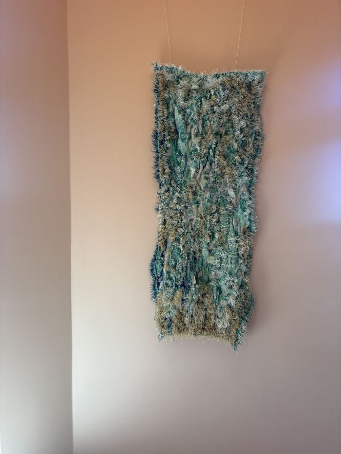
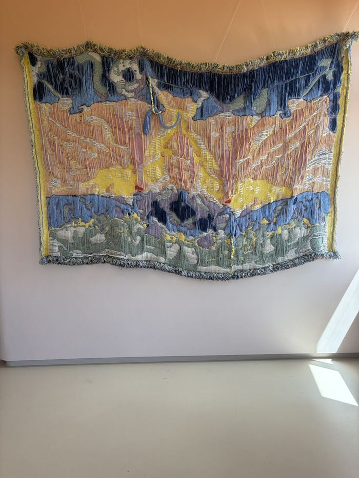
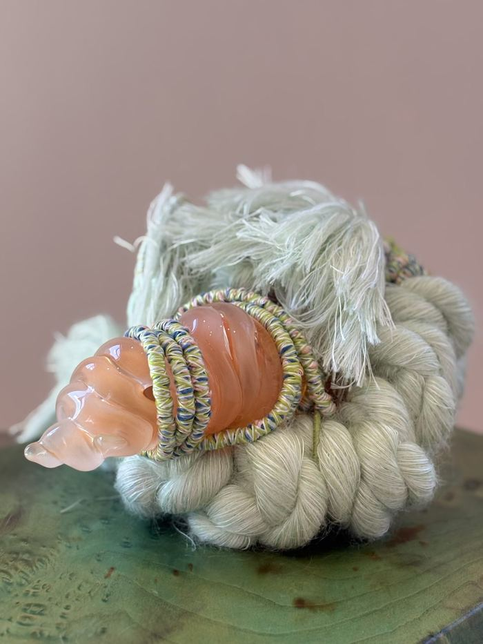
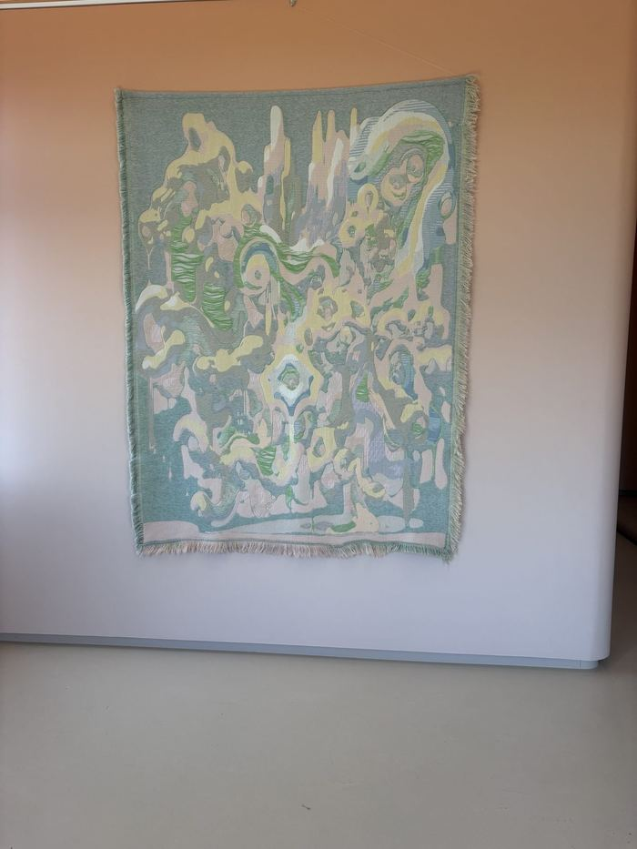

Season 02 — GROUNDGallery 3All makers →
Sandra Keja Planken
Sandra Keja Planken works at the intersection of textile, glass and immersive installation — slowing down traditional techniques such as passementerie, weaving and braiding into a tactile sculptural language of softness, transformation and perception.
Instagram · Message Sandra directly
100% of the sale proceeds go to the maker. Sandra Keja Planken works independently, without gallery representation.
—Works8 recorded

Recycled and remnant natural yarns · 160 x 110 cm · 2026 · unique piece
€ 4.444,– available

Recycled and remnant natural yarns · 120 x 45 cm · 2026 · unique piece
€ 3.333,– available

Remnant glasss, recycled yarns · 30 x 22 cm · 2026 · series of 2
€ 3.333,– available

Remnant glasss, recycled yarns · 30 x 22 cm · 2026 · series of 2
€ 3.333,– available

Recycled plastic, recycled wool, remnant yarns · 160 x 50 cm (circa) · 2026
€ 3.333,– available

Recycled wool, remnant cotton satin, wool yarns, recycled plastic yarns · 170 x 220 cm · 2024
€ 8.888,– available

Remnant glasss, recycled yarns · 28 x 22 cm · 2026 · unicum
€ 2.121,– available

Recycled and remnant cotton · 160 x 190 cm · 2025
€ 7.997,– available